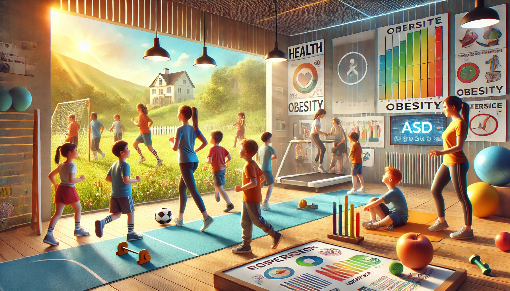

A obesidade é um problema crescente entre crianças com Transtorno do Espectro Autista (TEA). Estudos indicam que crianças com TEA têm uma probabilidade maior de desenvolver obesidade devido a uma combinação de fatores, incluindo diferenças no comportamento alimentar, níveis de atividade física e o uso de certos medicamentos.
A atividade física regular é essencial para combater a obesidade e promover um estilo de vida saudável. Para crianças com TEA, o exercício pode ser particularmente benéfico, não apenas para a saúde física, mas também para o bem-estar mental e emocional. A prática de atividades físicas ajuda a melhorar a coordenação motora, reduzir comportamentos repetitivos e aumentar a interação social.
Apesar dos benefícios, muitas crianças com TEA enfrentam barreiras para a prática de exercícios, como dificuldades de comunicação, sensibilidade sensorial e falta de programas de atividade física adaptados. Por isso, é crucial desenvolver estratégias eficazes que incentivem a participação dessas crianças em atividades físicas.
Estratégias para Promover a Atividade Física
Para promover a atividade física entre crianças com TEA, é importante criar um ambiente seguro e acolhedor. Isso pode incluir o uso de instruções visuais, a introdução gradual de novas atividades e a criação de uma rotina previsível. As atividades devem ser adaptadas às necessidades individuais de cada criança, levando em consideração suas preferências e sensibilidades sensoriais.
Além disso, a colaboração entre educadores físicos, pais e profissionais de saúde é fundamental. Juntos, eles podem desenvolver um plano de atividade física personalizado que leve em conta as capacidades e limitações da criança. Programas de treinamento para educadores também são essenciais para garantir que eles estejam preparados para trabalhar com crianças com TEA de maneira eficaz e sensível.
"Promover a atividade física entre crianças com TEA é um passo crucial para melhorar sua saúde e qualidade de vida. Com as estratégias certas, podemos fazer a diferença." - Especialista em Saúde e Educação Física
Benefícios a Longo Prazo
Os benefícios a longo prazo da atividade física para crianças com TEA são significativos. Além de ajudar a manter um peso saudável, o exercício regular pode melhorar a função cardiovascular, aumentar a força e a resistência muscular e promover a saúde óssea. Do ponto de vista mental, a atividade física pode ajudar a reduzir os níveis de ansiedade e depressão, melhorar o humor e aumentar a autoestima.
É importante lembrar que a promoção de um estilo de vida ativo deve começar desde cedo. Incentivar hábitos saudáveis na infância pode ter um impacto duradouro na vida das crianças, ajudando-as a crescerem como adultos saudáveis e ativos.
 Incentivar a atividade física desde cedo é essencial para promover a saúde e o bem-estar de crianças com TEA.Em resumo, a relação entre autismo, atividade física e obesidade destaca a importância de desenvolver estratégias eficazes para promover um estilo de vida saudável. Com a abordagem certa, podemos ajudar as crianças com TEA a colher os muitos benefícios da atividade física, melhorando sua saúde e qualidade de vida.